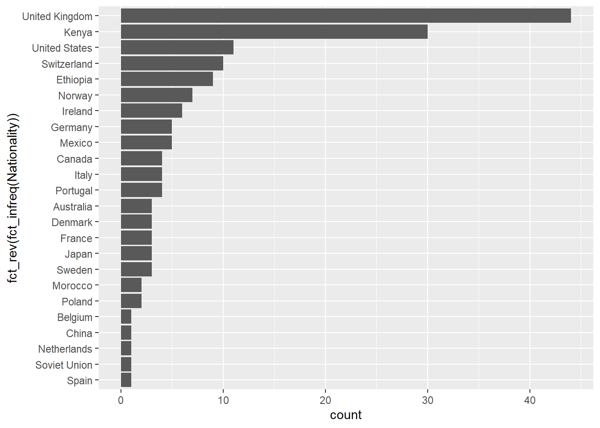
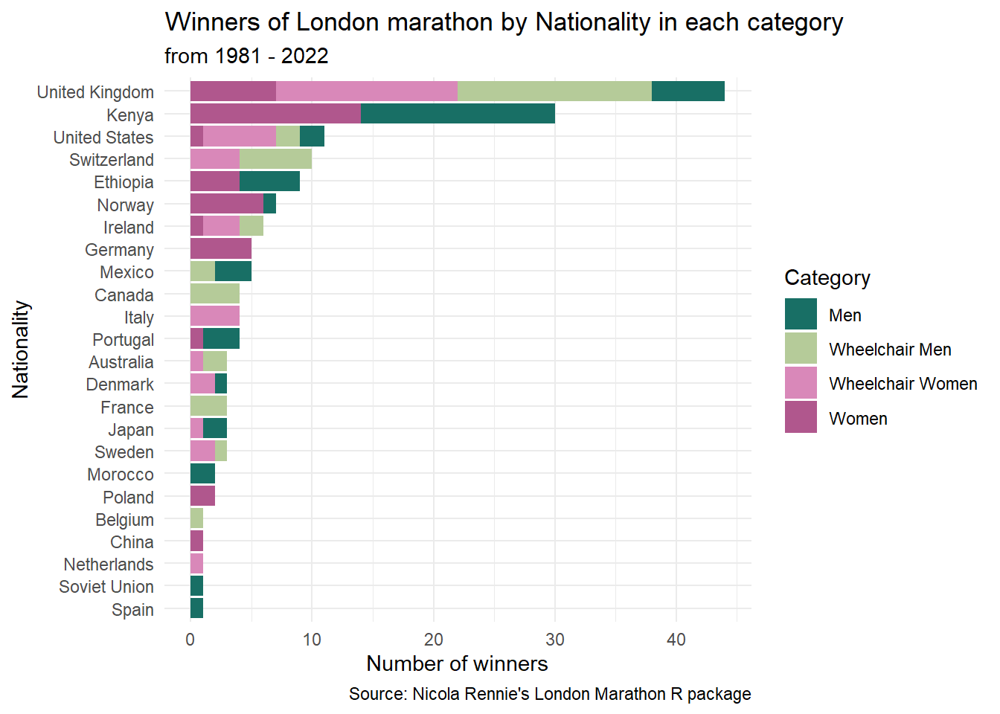

Mis primeros pasos en #tidytuesday
RLadies
R
R4DS - R para Ciencia de Datos


R4DS es una comunidad de aprendices de R de todos los niveles que trabajan juntos para mejorar sus habilidades en ciencia de datos. Y dentro de las actividades de la comunidad es tidytuesday, que es un proyecto semanal de datos sociales. Todos están invitados a participar y se invita a compartir el código utilizado para generar los resultados.
Acá puedes conocer el repositorio del proyecto con la actividad de cada semana y participar!
Semana elegida {tidytuesday}: Week 17 - 2023: London Marathon :running:
Paquetes a utilizar
dataset elegido
tuesdata <- tidytuesdayR::tt_load('2023-04-25')
winners <- tuesdata$winnersGráficos
Quise probar con dos paquetes el mismo resultado.
En {plotly}
- Sumo paleta de colores
palet <- c("#f18701", "#f7b801", "#7678ed", "#3d348b")- Ordeno categorias y adecuo paleta de colores
final
count(winners, Nationality, Category) %>%
plot_ly(x=~Nationality, y=~n, type = 'bar',
color = ~Category, colors = palet) %>%
layout(
title = "Winners of London marathon by Nationality in each category from 1981 - 2022",
yaxis = list(title = 'Number of winners', range= c(0,45)),
xaxis = list(title = 'Nationality', categoryorder = "total descending",
tickangle = -45),
barmode = "stack",bargap = 2, plot_bgcolor='white'){ggplot2}
ggplot(winners, aes(x=fct_rev(fct_infreq(Nationality)))) +
geom_bar() +
coord_flip()
- Mejoro colores y formato
ggplot(winners, aes(x=fct_rev(fct_infreq(Nationality)))) +
geom_bar(aes(fill = Category)) +
coord_flip() +
scale_fill_manual(values = c("#186F65", "#B5CB99", "#D988B9", "#B0578D")) +
labs(
y = 'Number of winners',
x = 'Nationality',
title = "Winners of London marathon by Nationality in each category",
subtitle = "from 1981 - 2022",
caption = "Source: Nicola Rennie's London Marathon R package",
)+
theme_minimal()